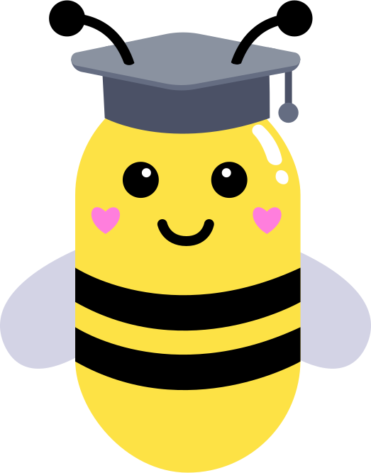

Ca y est ! Ma sortie est terminée. Je peux rentrer à la ruche avec les autres abeilles et j'ai participé au mélange des fleurs, que l'on appelle donc la pollinisation.
Nous les abeilles, jouons un rôle majeur pour toutes les fleurs et les végétaux, mais il y a aussi d'autres insectes comme les bourdons, les papillons, etc.
Malheureusement, certains êtres humains font du mal aux insectes comme nous, et bientôt, nous auront du mal à faire notre travail et aider les végétaux. Plus personne ne pourra manger de fruits et de légumes... c'est l'équilibre très fragile de ce que l'on appelle l'écosystème qui est en jeu, alors je compte sur toi pour nous protéger et aider les abeilles.
Regardons la vidéo juste en-dessous !